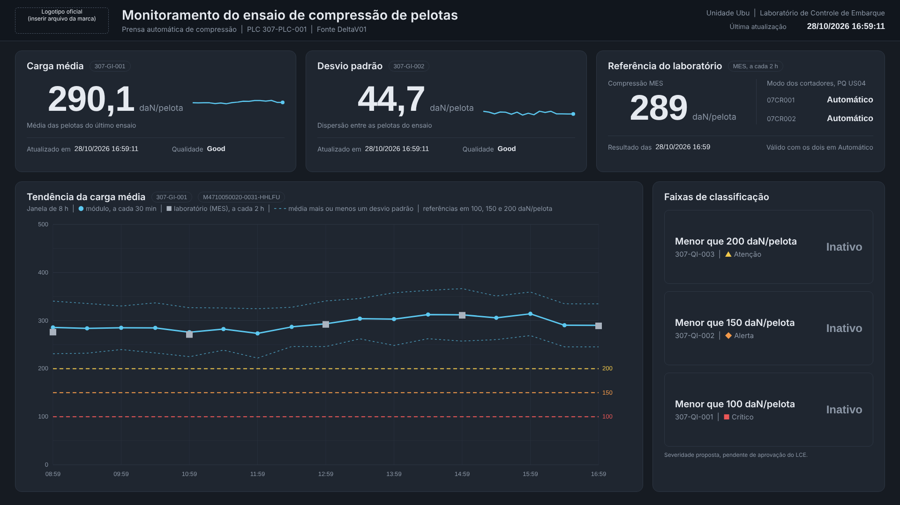
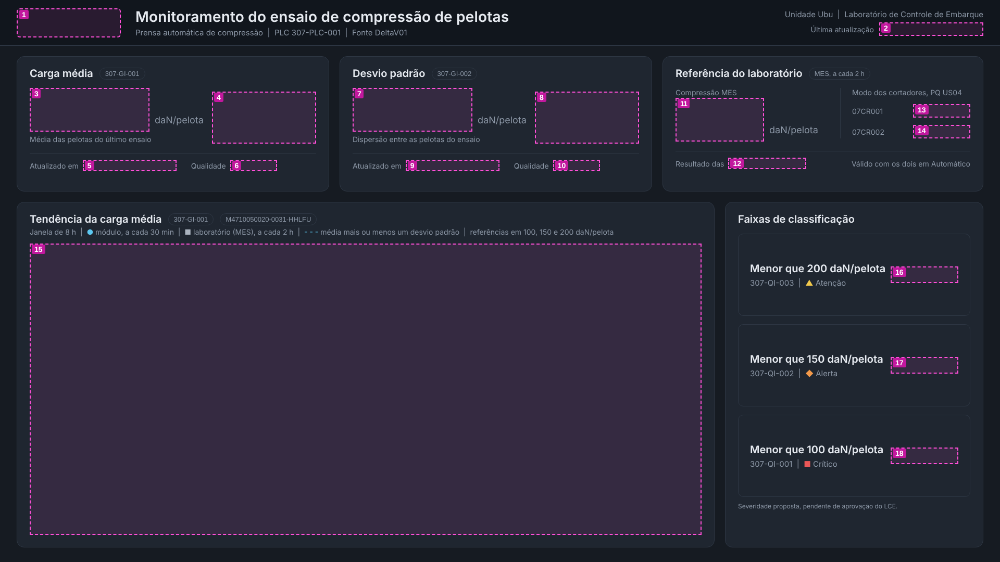

Tela: Monitoramento do ensaio de compressão de pelotas (versão 3: sem a tabela de tags e sem o painel de qualidade dos dados; referência do laboratório em destaque)
Resultado esperado: igual a tela_exemplo_normal.png
Tempo estimado: 2 a 3 horas na primeira montagem

A tela tem duas camadas:
fundo_1920x1080.bmp ou .png). Contém tudo o que não muda: cabeçalho, painéis, títulos, rótulos, unidades e símbolos de severidade. Você não desenha nenhum texto fixo no editor.Para não errar a posição, você monta primeiro com a imagem mapa_posicionamento.bmp, que mostra um retângulo rosa numerado onde vai cada objeto. No fim, troca o mapa pelo fundo definitivo.

| Arquivo | Para que serve |
|---|---|
fundo_1920x1080.bmp e .png |
Imagem de fundo definitiva (mesmo conteúdo; use BMP se o editor não aceitar PNG) |
mapa_posicionamento.bmp e .png |
Guia de montagem com os retângulos numerados |
posicoes_objetos.xlsx |
Posição e tamanho de cada objeto, com conversão automática para as unidades do editor |
posicoes_objetos.csv |
Mesmas informações em texto |
tela_exemplo_normal.png |
Como a tela deve ficar em operação normal |
tela_exemplo_f200.png |
Carga abaixo de 200: faixa de Atenção ativa |
tela_exemplo_bad.png |
Qualidade Bad na carga média |
tela_exemplo_manual.png |
Cortador 07CR002 em manual |
| Uso | RGB | Hexadecimal |
|---|---|---|
| Fundo da tela | 22, 27, 34 | #161B22 |
| Fundo do cabeçalho | 17, 22, 29 | #11161D |
| Fundo dos painéis e dos campos de dados | 31, 38, 48 | #1F2630 |
| Grade das tendências | 46, 55, 68 | #2E3744 |
| Texto de valores | 230, 234, 240 | #E6EAF0 |
| Texto de rótulos, eixos e estado Inativo | 139, 150, 165 | #8B96A5 |
| Linha do módulo | 92, 200, 240 | #5CC8F0 |
| Pontos do laboratório (MES) | 170, 179, 191 | #AAB3BF |
| Atenção (menor que 200) | 242, 201, 76 | #F2C94C |
| Alerta (menor que 150), qualidade ruim e modo Manual | 242, 153, 74 | #F2994A |
| Crítico (menor que 100) | 235, 87, 87 | #EB5757 |
A1. Copie a pasta 03_aspen para uma pasta de rede que todas as estações do PIMS enxerguem. Sugestão: a mesma pasta onde ficam as telas do laboratório, por exemplo G:\Grupos de Trabalho\UBU Gerência de Processos e Automação\Laboratório\17 - PIMS - ...\Compressão.
Isso é importante: se a imagem de fundo ficar no seu disco local (
C:), outras pessoas podem abrir a tela sem o fundo, caso o editor guarde só o caminho do arquivo.
A2. Abra posicoes_objetos.xlsx no Excel e deixe aberto. Você vai consultar as posições nele.
A tela PQ US04 já usa os mesmos tipos de vínculo que esta tela vai usar. Use-a como modelo.
B1. No editor, abra PIMS_PQ_US04_atual_rev_1.
B2. Dê duplo clique no valor de Compressão (o número ao lado do rótulo "Compressão", no painel "Qualidade"). Deve abrir a janela de propriedades do campo de dados, com:
M4710050020-0031-HHLFUIP_MESVALORVALObserve em que abas ficam fonte, cor do texto, cor de fundo, borda, formato numérico e cores condicionais. Faça uma captura dessa janela. Ela será útil se algo deste roteiro não bater.
B3. Ainda nessa janela, abra a lista de atributos disponíveis (onde aparece VAL). Anote os nomes exatos:
| O que | Nome exato na lista (anote aqui) |
|---|---|
| Valor | VAL |
| Data e hora do valor | ______________________ |
| Qualidade do valor | ______________________ |
Nas fichas da Parte E, onde estiver ATRIBUTO DE HORA ou ATRIBUTO DE QUALIDADE, use os nomes que você anotou.
B4. Confira os mapas das tags novas:
307-GI-001 e abra a lista de mapas. Confirme se aparece IP_ANALOGMAP, como em 406-FX-001 na mesma tela.307-QI-001 e anote o mapa de discreto disponível (provavelmente IP_DISCRETEMAP): ______________________B5. Dê duplo clique no indicador Manual/Automático do 07CR002. Confirme o vínculo U04-07CR002, mapa IP_PIDMAP03. Veja se o campo mostra o texto "Manual"/"Automático" ou um número. Anote: ______________________
B6. Feche a tela PQ US04 sem salvar.
C1. Menu Arquivo > Novo.
C2. Abra as propriedades da tela (duplo clique numa área vazia do fundo cinza). Defina:
C3. Salve na pasta da etapa A1 com o nome LCE_Compressao_Pelotas_Prensa01.
D1. Selecione a ferramenta Imagem na paleta da esquerda (ícone de figura) e clique no canto superior esquerdo da tela.
D2. Escolha mapa_posicionamento.bmp (ou .png).
D3. Nas propriedades da imagem, defina X = 0, Y = 0, largura = 1920, altura = 1080. Não redimensione arrastando com o mouse.
D4. Calibração, o passo mais importante. Veja como a imagem ficou:
posicoes_objetos.xlsx, digite esse número na célula amarela "Largura total no editor". A planilha recalcula todas as posições nas unidades do editor. Corrija também a altura da imagem com o valor da coluna A editor da linha "Fundo".D5. Envie a imagem para trás (Editar > Enviar para trás, ou o botão de ordem na paleta) e, se houver a opção, bloqueie o objeto para não arrastá-lo por engano.
Como usar as fichas:
Comece pelo objeto 3 (carga média). Ele serve para calibrar a fonte: o número deve ocupar quase toda a altura do retângulo rosa, encostado à direita. Se o texto em 57 pt ficar maior ou menor que o retângulo, ajuste o tamanho até encaixar e aplique a mesma proporção em todos os outros objetos. Exemplo: se 57 pt precisou virar 48 pt, multiplique todos os tamanhos de fonte por 0,84.
Dica para ganhar tempo: depois de configurar um objeto, copie e cole para os outros do mesmo tipo e troque só a tag, a posição e o que mudar. Por exemplo, o objeto 3 copiado gera os objetos 7 e 11, e o objeto 16 copiado gera os objetos 17 e 18.
Fundo dos campos de dados: use a cor do painel onde o campo fica (indicada em cada ficha) ou "transparente", se o editor oferecer. Nunca deixe o fundo branco nem com borda.
| Propriedade | Valor |
|---|---|
| Ferramenta | Imagem |
| Posição em pixels (X, Y) | 32, 16 |
| Tamanho em pixels (largura x altura) | 200 x 56 |
| Observação | Arquivo oficial fornecido pela Comunicação. Manter a proporção dentro do retângulo. Ver Parte H. |
| Propriedade | Valor |
|---|---|
| Ferramenta | Campo de dados |
| Posição em pixels (X, Y) | 1688, 43 |
| Tamanho em pixels (largura x altura) | 200 x 26 |
| Tag | 307-GI-001 |
| Mapa | IP_ANALOGMAP |
| Atributo | ATRIBUTO DE HORA (anotado em B3) |
| Fonte | Arial 14 pt, negrito |
| Alinhamento | Direita |
| Cor do texto | RGB 230, 234, 240 |
| Cor de fundo | RGB 17, 22, 29 (ou transparente), sem borda |
| Formato | dd/mm/aaaa hh:mm:ss |
| Regra de cor | Nenhuma |
| Observação | Fica no cabeçalho, que tem fundo mais escuro que os painéis. |
| Propriedade | Valor |
|---|---|
| Ferramenta | Campo de dados |
| Posição em pixels (X, Y) | 57, 169 |
| Tamanho em pixels (largura x altura) | 230 x 84 |
| Tag | 307-GI-001 |
| Mapa | IP_ANALOGMAP |
| Atributo | VAL |
| Fonte | Arial 57 pt, negrito |
| Alinhamento | Direita |
| Cor do texto | RGB 230, 234, 240 |
| Cor de fundo | RGB 31, 38, 48 (ou transparente), sem borda |
| Formato | 1 casa decimal (0,0) |
| Regra de cor | Nenhuma |
| Observação | Objeto de calibração da fonte (ver início da Parte E). A unidade daN/pelota já está no fundo. |
| Propriedade | Valor |
|---|---|
| Ferramenta | Tendência (plot) |
| Posição em pixels (X, Y) | 407, 176 |
| Tamanho em pixels (largura x altura) | 200 x 100 |
| Observação | Ver Parte G. |
| Propriedade | Valor |
|---|---|
| Ferramenta | Campo de dados |
| Posição em pixels (X, Y) | 159, 307 |
| Tamanho em pixels (largura x altura) | 180 x 22 |
| Tag | 307-GI-001 |
| Mapa | IP_ANALOGMAP |
| Atributo | ATRIBUTO DE HORA (anotado em B3) |
| Fonte | Arial 11 pt |
| Alinhamento | Esquerda |
| Cor do texto | RGB 230, 234, 240 |
| Cor de fundo | RGB 31, 38, 48 (ou transparente), sem borda |
| Formato | dd/mm/aaaa hh:mm:ss |
| Regra de cor | Nenhuma |
| Propriedade | Valor |
|---|---|
| Ferramenta | Campo de dados |
| Posição em pixels (X, Y) | 442, 307 |
| Tamanho em pixels (largura x altura) | 90 x 22 |
| Tag | 307-GI-001 |
| Mapa | IP_ANALOGMAP |
| Atributo | ATRIBUTO DE QUALIDADE (anotado em B3) |
| Fonte | Arial 11 pt, negrito |
| Alinhamento | Esquerda |
| Cor do texto | RGB 230, 234, 240 |
| Cor de fundo | RGB 31, 38, 48 (ou transparente), sem borda |
| Formato | Texto |
| Regra de cor | Texto igual a Good: RGB 230, 234, 240. Qualquer outro texto: RGB 242, 153, 74 |
| Propriedade | Valor |
|---|---|
| Ferramenta | Campo de dados |
| Posição em pixels (X, Y) | 677, 169 |
| Tamanho em pixels (largura x altura) | 230 x 84 |
| Tag | 307-GI-002 |
| Mapa | IP_ANALOGMAP |
| Atributo | VAL |
| Fonte | Arial 57 pt, negrito |
| Alinhamento | Direita |
| Cor do texto | RGB 230, 234, 240 |
| Cor de fundo | RGB 31, 38, 48 (ou transparente), sem borda |
| Formato | 1 casa decimal (0,0) |
| Regra de cor | Nenhuma |
| Observação | Copie o objeto 3 e troque a tag e a posição. |
| Propriedade | Valor |
|---|---|
| Ferramenta | Tendência (plot) |
| Posição em pixels (X, Y) | 1027, 176 |
| Tamanho em pixels (largura x altura) | 200 x 100 |
| Observação | Ver Parte G. |
| Propriedade | Valor |
|---|---|
| Ferramenta | Campo de dados |
| Posição em pixels (X, Y) | 779, 307 |
| Tamanho em pixels (largura x altura) | 180 x 22 |
| Tag | 307-GI-002 |
| Mapa | IP_ANALOGMAP |
| Atributo | ATRIBUTO DE HORA (anotado em B3) |
| Fonte | Arial 11 pt |
| Alinhamento | Esquerda |
| Cor do texto | RGB 230, 234, 240 |
| Cor de fundo | RGB 31, 38, 48 (ou transparente), sem borda |
| Formato | dd/mm/aaaa hh:mm:ss |
| Regra de cor | Nenhuma |
| Observação | Copie o objeto 5 e troque a tag e a posição. |
| Propriedade | Valor |
|---|---|
| Ferramenta | Campo de dados |
| Posição em pixels (X, Y) | 1062, 307 |
| Tamanho em pixels (largura x altura) | 90 x 22 |
| Tag | 307-GI-002 |
| Mapa | IP_ANALOGMAP |
| Atributo | ATRIBUTO DE QUALIDADE (anotado em B3) |
| Fonte | Arial 11 pt, negrito |
| Alinhamento | Esquerda |
| Cor do texto | RGB 230, 234, 240 |
| Cor de fundo | RGB 31, 38, 48 (ou transparente), sem borda |
| Formato | Texto |
| Regra de cor | Texto igual a Good: RGB 230, 234, 240. Qualquer outro texto: RGB 242, 153, 74 |
| Observação | Copie o objeto 6 e troque a tag e a posição. |
| Propriedade | Valor |
|---|---|
| Ferramenta | Campo de dados |
| Posição em pixels (X, Y) | 1297, 188 |
| Tamanho em pixels (largura x altura) | 170 x 84 |
| Tag | M4710050020-0031-HHLFU |
| Mapa | IP_MESVALOR |
| Atributo | VAL |
| Fonte | Arial 57 pt, negrito |
| Alinhamento | Direita |
| Cor do texto | RGB 230, 234, 240 |
| Cor de fundo | RGB 31, 38, 48 (ou transparente), sem borda |
| Formato | Sem casas decimais (0) |
| Regra de cor | Nenhuma |
| Observação | Mesmo vínculo do campo Compressão da tela PQ US04 (passo B2). Mesma fonte do objeto 3: copie o 3 e troque tag, mapa e formato. |
| Propriedade | Valor |
|---|---|
| Ferramenta | Campo de dados |
| Posição em pixels (X, Y) | 1398, 303 |
| Tamanho em pixels (largura x altura) | 150 x 22 |
| Tag | M4710050020-0031-HHLFU |
| Mapa | IP_MESVALOR |
| Atributo | ATRIBUTO DE HORA (anotado em B3) |
| Fonte | Arial 11 pt |
| Alinhamento | Esquerda |
| Cor do texto | RGB 230, 234, 240 |
| Cor de fundo | RGB 31, 38, 48 (ou transparente), sem borda |
| Formato | dd/mm/aaaa hh:mm |
| Regra de cor | Nenhuma |
| Observação | Copie o objeto 5 e troque tag, mapa e formato. |
| Propriedade | Valor |
|---|---|
| Ferramenta | Campo de dados |
| Posição em pixels (X, Y) | 1753, 200 |
| Tamanho em pixels (largura x altura) | 110 x 26 |
| Tag | U04-07CR001 |
| Mapa | IP_PIDMAP03 |
| Atributo | VAL |
| Fonte | Arial 14 pt, negrito |
| Alinhamento | Direita |
| Cor do texto | RGB 230, 234, 240 |
| Cor de fundo | RGB 31, 38, 48 (ou transparente), sem borda |
| Formato | Texto |
| Regra de cor | Texto Automático: RGB 230, 234, 240. Texto Manual: RGB 242, 153, 74 |
| Observação | Mesmo vínculo do indicador Manual/Automático da tela PQ US04 (passo B5). Se o campo mostrar número, use a regra de cor pelo número equivalente. |
| Propriedade | Valor |
|---|---|
| Ferramenta | Campo de dados |
| Posição em pixels (X, Y) | 1753, 240 |
| Tamanho em pixels (largura x altura) | 110 x 26 |
| Tag | U04-07CR002 |
| Mapa | IP_PIDMAP03 |
| Atributo | VAL |
| Fonte | Arial 14 pt, negrito |
| Alinhamento | Direita |
| Cor do texto | RGB 230, 234, 240 |
| Cor de fundo | RGB 31, 38, 48 (ou transparente), sem borda |
| Formato | Texto |
| Regra de cor | Texto Automático: RGB 230, 234, 240. Texto Manual: RGB 242, 153, 74 |
| Observação | Copie o objeto 13 e troque a tag. |
| Propriedade | Valor |
|---|---|
| Ferramenta | Tendência (plot) |
| Posição em pixels (X, Y) | 57, 468 |
| Tamanho em pixels (largura x altura) | 1290 x 560 |
| Observação | Penas, escala, período e aparência na Parte F. |
| Propriedade | Valor |
|---|---|
| Ferramenta | Campo de dados |
| Posição em pixels (X, Y) | 1710, 512 |
| Tamanho em pixels (largura x altura) | 130 x 32 |
| Tag | 307-QI-003 |
| Mapa | mapa de discreto anotado em B4 (provavelmente IP_DISCRETEMAP) |
| Atributo | VAL |
| Fonte | Arial 18 pt, negrito |
| Alinhamento | Direita |
| Cor do texto | RGB 230, 234, 240 |
| Cor de fundo | RGB 31, 38, 48 (ou transparente), sem borda |
| Formato | Texto (ou número inteiro) |
| Regra de cor | Valor 1 ou Ativo: RGB 242, 201, 76. Valor 0 ou Inativo: RGB 139, 150, 165 |
| Propriedade | Valor |
|---|---|
| Ferramenta | Campo de dados |
| Posição em pixels (X, Y) | 1710, 686 |
| Tamanho em pixels (largura x altura) | 130 x 32 |
| Tag | 307-QI-002 |
| Mapa | mapa de discreto anotado em B4 (provavelmente IP_DISCRETEMAP) |
| Atributo | VAL |
| Fonte | Arial 18 pt, negrito |
| Alinhamento | Direita |
| Cor do texto | RGB 230, 234, 240 |
| Cor de fundo | RGB 31, 38, 48 (ou transparente), sem borda |
| Formato | Texto (ou número inteiro) |
| Regra de cor | Valor 1 ou Ativo: RGB 242, 153, 74. Valor 0 ou Inativo: RGB 139, 150, 165 |
| Observação | Copie o objeto 16. |
| Propriedade | Valor |
|---|---|
| Ferramenta | Campo de dados |
| Posição em pixels (X, Y) | 1710, 860 |
| Tamanho em pixels (largura x altura) | 130 x 32 |
| Tag | 307-QI-001 |
| Mapa | mapa de discreto anotado em B4 (provavelmente IP_DISCRETEMAP) |
| Atributo | VAL |
| Fonte | Arial 18 pt, negrito |
| Alinhamento | Direita |
| Cor do texto | RGB 230, 234, 240 |
| Cor de fundo | RGB 31, 38, 48 (ou transparente), sem borda |
| Formato | Texto (ou número inteiro) |
| Regra de cor | Valor 1 ou Ativo: RGB 235, 87, 87. Valor 0 ou Inativo: RGB 139, 150, 165 |
| Observação | Copie o objeto 16. |
A ficha do objeto 15 traz a posição. Aqui estão as penas (linhas) e a aparência.
F1. Penas. Adicione nesta ordem:
| Pena | Tag | Mapa | Cor RGB | Linha | Marcador | Escala |
|---|---|---|---|---|---|---|
| 1 | 307-GI-001 |
IP_ANALOGMAP |
92, 200, 240 | contínua, espessura 3 | círculo | fixa de 0 a 500 |
| 2 | M4710050020-0031-HHLFU |
IP_MESVALOR |
170, 179, 191 | sem linha (ou a mais fina disponível) | quadrado | fixa de 0 a 500 |
| 3 | 307-GI-001-SUP (tag calculada, Parte K) |
IP_ANALOGMAP |
92, 200, 240 | tracejada, espessura 1 | nenhum | fixa de 0 a 500 |
| 4 | 307-GI-001-INF (tag calculada, Parte K) |
IP_ANALOGMAP |
92, 200, 240 | tracejada, espessura 1 | nenhum | fixa de 0 a 500 |
| 5 | 307-REF-200 (tag calculada, Parte K) |
IP_ANALOGMAP |
242, 201, 76 | tracejada, espessura 2 | nenhum | fixa de 0 a 500 |
| 6 | 307-REF-150 (tag calculada, Parte K) |
IP_ANALOGMAP |
242, 153, 74 | tracejada, espessura 2 | nenhum | fixa de 0 a 500 |
| 7 | 307-REF-100 (tag calculada, Parte K) |
IP_ANALOGMAP |
235, 87, 87 | tracejada, espessura 2 | nenhum | fixa de 0 a 500 |
Todas as penas na mesma escala fixa de 0 a 500. Se alguma ficar em autoescala, as linhas deixam de ser comparáveis. Esse é o erro mais comum em tendências.
As penas 3 a 7 só podem ser incluídas depois que as tags calculadas existirem (Parte K). Até lá, a tendência mostra as penas 1 e 2, e as linhas tracejadas não aparecem.
F2. Período: 8 horas (8:00:00), terminando no horário atual, com atualização automática.
F3. Aparência:
| Item | Valor |
|---|---|
| Fundo do gráfico | RGB 31, 38, 48 |
| Grade | RGB 46, 55, 68, linhas finas, horizontais a cada 100 |
| Textos dos eixos | Arial 10 pt, RGB 139, 150, 165 |
| Formato do eixo de tempo | hh:mm |
| Legenda | oculta, se houver a opção. A legenda já está escrita na imagem de fundo, acima do gráfico |
| Barra de tempo e botões | ocultos, se houver a opção |
Iguais à tendência principal, com estas diferenças:
| Item | Objeto 4 | Objeto 8 |
|---|---|---|
| Pena | 307-GI-001, IP_ANALOGMAP |
307-GI-002, IP_ANALOGMAP |
| Cor e linha | RGB 92, 200, 240, espessura 2 | RGB 92, 200, 240, espessura 2 |
| Escala | fixa de 0 a 500 | fixa de 0 a 150 |
| Período | 8 horas | 8 horas |
| Eixos, grade, legenda, barra de tempo | ocultos | ocultos |
Com a ferramenta Imagem, insira o arquivo oficial do logotipo fornecido pela Comunicação, dentro do retângulo 1, mantendo a proporção. Não redesenhe a marca. Se ainda não tiver o arquivo, pule esta etapa: o espaço fica vazio no fundo.
I1. Desbloqueie e selecione a imagem do mapa.
I2. Troque o arquivo para fundo_1920x1080.bmp (ou .png), mantendo X, Y, largura e altura. Se o editor não permitir trocar o arquivo, apague a imagem e repita D1 a D5 com o fundo definitivo.
I3. Envie para trás, bloqueie e salve.
Abra a tela em modo de execução (Process Explorer) e compare com as imagens de exemplo.
| Nº | Verificar | Esperado |
|---|---|---|
| 1 | Nenhum retângulo rosa visível | Mapa trocado pelo fundo definitivo |
| 2 | Campos sem borda e sem fundo branco | Os campos somem dentro dos painéis |
| 3 | Carga média e desvio padrão | 1 casa decimal com vírgula, por exemplo 290,1 |
| 4 | "Última atualização" e "Atualizado em" | Mesmo horário do último ensaio |
| 5 | Qualidade da carga média e do desvio padrão | Good em branco. Qualquer outro texto em laranja |
| 6 | Faixas | Inativo em cinza. Ativo em amarelo, laranja ou vermelho, conforme a faixa |
| 7 | Compressão MES (painel do laboratório) | Mesmo valor da tela PQ US04 no mesmo horário |
| 8 | Modo dos cortadores | Mesmo estado da tela PQ US04 |
| 9 | Tendência | 8 h, escala de 0 a 500, quadrados cinza a cada 2 h |
| 10 | Leitura a distância | Carga média legível a 3 metros |
Duas coisas não podem ser feitas no editor e precisam ser pedidas ao administrador do InfoPlus.21. Texto pronto para enviar:
Prezados, para a tela de monitoramento do ensaio de compressão de pelotas (LCE), solicito:
- Tags calculadas no Aspen Calc, recalculadas a cada novo valor de
307-GI-001:307-GI-001-SUP=307-GI-001+307-GI-002307-GI-001-INF=307-GI-001menos307-GI-002307-REF-200= 200 (constante)307-REF-150= 150 (constante)307-REF-100= 100 (constante)Os nomes são sugestões e podem seguir o padrão da área. 2. Descritor de estados para os discretos
307-QI-001,307-QI-002e307-QI-003: 0 = Inativo, 1 = Ativo, para que a tela mostre o texto em vez do número.Obrigado.
Enquanto isso não for feito, a tela funciona assim: a tendência mostra só o módulo e o laboratório, sem as linhas tracejadas, e as faixas mostram 0 ou 1. Nesse caso, a regra de cor das fichas 16 a 18 usa os valores 0 e 1.
| Problema | Causa provável | Solução |
|---|---|---|
| A imagem de fundo aparece borrada ou com textos esticados | Imagem redimensionada | Refaça D3 com os valores exatos e confira o fator de D4 |
| Os campos ficam desalinhados em relação ao fundo | Fator de unidade errado | Refaça D4 e use as colunas "editor" da planilha |
| O campo aparece com caixa branca | Fundo do campo no padrão do editor | Defina o fundo na cor da ficha ou transparente, e remova a borda |
| Número com ponto em vez de vírgula | Configuração regional da estação | Verifique em Ferramentas > Opções; se não houver ajuste, peça à TI |
| A tendência sobe e desce a escala sozinha | Pena em autoescala | Defina escala fixa em todas as penas (F1) |
| A imagem não aparece em outro computador | Arquivo em disco local | Mova as imagens para a pasta de rede (A1) e reinsira |
| O número grande não cabe no retângulo | Fonte maior que o previsto | Recalibre no objeto 3 e aplique a proporção a todos |
| Faixa mostra 0 ou 1 em vez de texto | Descritor de estados não configurado | Normal até o pedido da Parte K ser atendido |